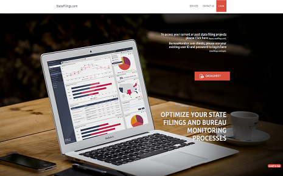

Home Page for Statefilings.com.


StateFilings.com is a closed source B2B SaaS application I worked on at my previous position with Perr&Knight in Santa Monica, CA. This modular web application provides numerous ancillary services to insurance companies to help streamline their state filing processes. I worked primarily on designing and developing new UI/UX features for the front end. However, I also worked on the back end using C# and SQl/T-SQL to implement new web pages that interfaced with our database to provide clients with their data in real time. Additionally, my role extended to providing ongoing maintenance and support for the application through daily bug fixes, database maintenance, and client support.